1 tl;dr
Guide to perform analyses in the cloud with RStudio on Amazon Lightsail
[This post is inspired by and extends upon a guide from SAS and R]
In this post we will use the new Amazon Lightsail to create an always-on RStudio enviornment in the cloud. With an older Macbook Air, the migration from local to cloud data processing and analysis has allowed me to forget about resource constraints.
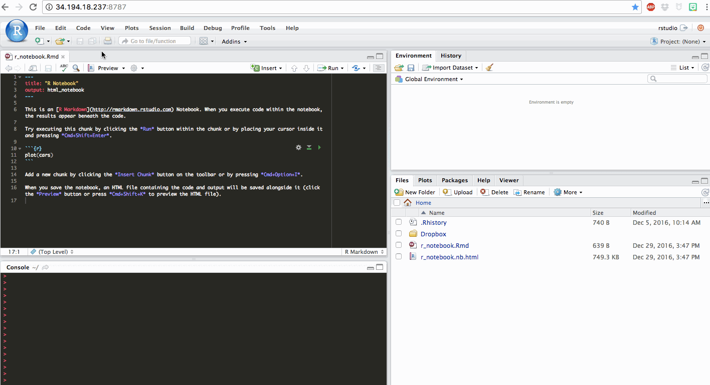
2 Setup Lightsail Instance
Lightsail is Amazon’s virtual private server (VPS) offering that makes spinning up a workspace in the cloud a breeze. In contrast to EC2, there is little provisioning involved and the pricing model is “no-nonsense” (i.e. transparent). You will notice that the interface is much more user-friendly than the EC2 Dashboard.
- Login into Amazon Lightsail and create a new instance.
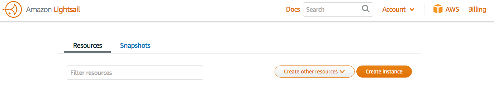
- Select Base OS and Ubuntu.
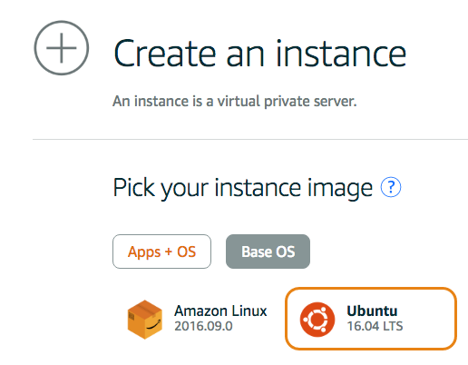
- I encourage you to use your own public key rather than a key from Amazon for ease of SSH’ing to your VPS. If you’re on OSX, your public key is likely in the following location:
~/.ssh/id_rsa.pubIf you haven’t setup a SSH key yet, the Github guide is a good place to go.
For some reason, Amazon makes this difficult by using a regular file browser. You need to make hidden files viewable in Finder by running the two commands:
defaults write com.apple.finder AppleShowAllFiles YES
killall FinderFinder will automatically relaunch. Navigate to ~/.ssh and drag that folder into the Upload a key pair file dialog.
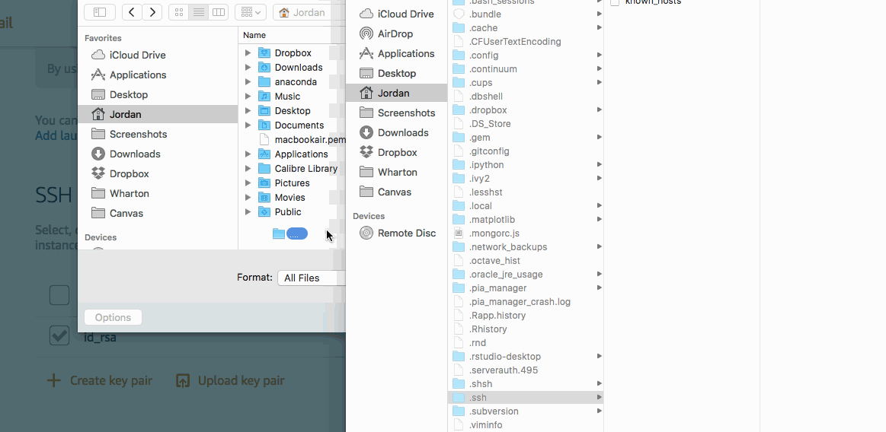
Once the key pair is uploaded, run the following commands to hide hidden files again in Finder.
defaults write com.apple.finder AppleShowAllFiles N
killall Finder- Select the $5/month plan (that comes with a month free), name your instance anything (I chose RStudio), and click Create.
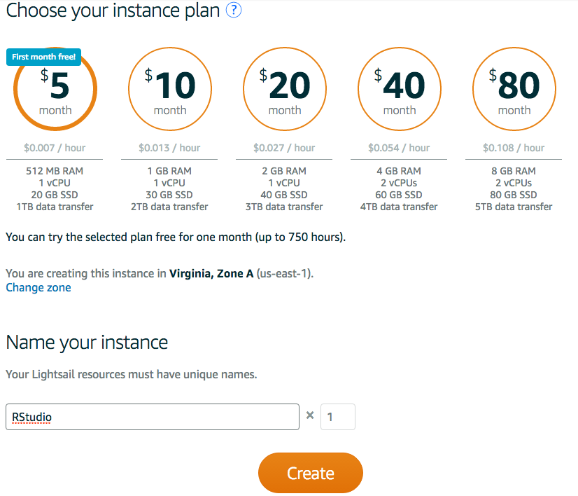
- While you are waiting for the server to spin up, click the three dots in the upper-right corner of the server and select Manage. On the Networking tab, under the Firewall table, click + Add Another. Leave Custom and TCP, but change the range to just 8787. This will be the port we connect to the RStudio UI.
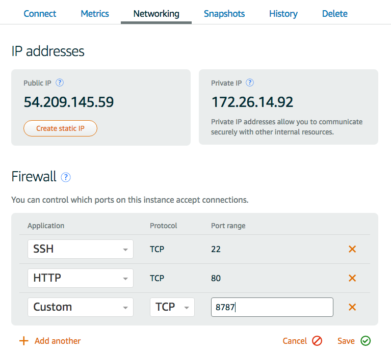
- After the instance is Running, SSH into the server using the public IP address in the corner (do not worry, the one below has been deleted).
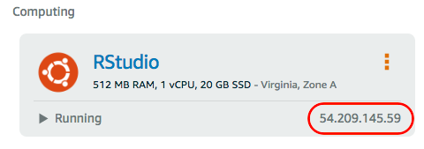
ssh ubuntu@54.209.145.59Say yes to the recognition of your SSH key. You are now connected!
3 Swap Space
The installation of some R packages can be very memory intensive (e.g. tidytext) and the Lightsail VPS has only 512MB of memory. In order to make such installations possible, we need to use swap space. Swap space is a portion of virtual memory that is on the hard disk, used when RAM is full. Luckily the base tier has a 20GB SSD. These steps comes from a great tutorial by DigitialOcean.
On the VPS, run the free command to see that currently there is no swap memory.
free -h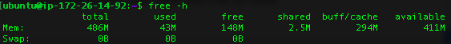
Run the following commands to create a swap file called swap.img, size it to be 2GB (2048k) and turn it on.
cd /var
sudo touch swap.img
sudo chmod 600 swap.img
sudo dd if=/dev/zero of=/var/swap.img bs=2048k count=1000
sudo mkswap /var/swap.img
sudo swapon /var/swap.imgNow run free again to see the 2GB is now swap space.
free -h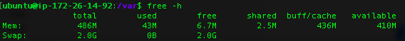
4 Rocker
- Download Docker by running and clicking Y to install.
sudo apt-get install docker.io- Start the Docker service by running
sudo service docker start- Run the following command to start the Rocker file
sudo docker run -d -p 8787:8787 -e ROOT=TRUE rocker/hadleyverseThe first time, this will require a download and extraction of the file:
In the run command above,
- -d indicates the container starts in detached mode
- -p publishes a container᾿s port to a port on the host (allowing us to use 8787 to access RStudio in the browser)
- -e sets an environment variable, in our case enabling root access
- In the browser, navigate to
<VPS IP address>:8787. Username =rstudioand password =rstudio.
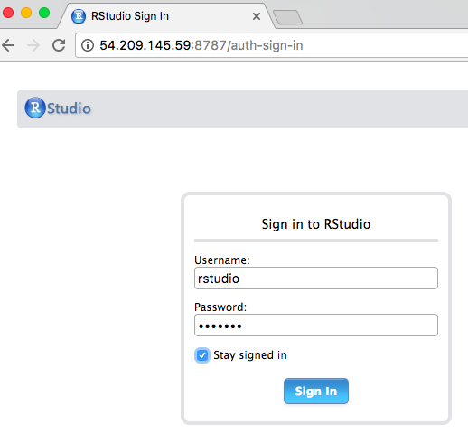
- You’re using RStudio in the cloud!
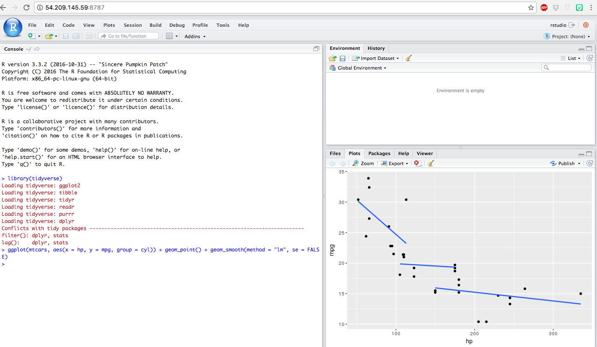
5 Rocker Usage
5.1 Installing Packages
You are going to want to customize your docker container for future R-ing. Let’s bookmark the webpage and get started. Install your favorite packages (some that use g++ will take a bit longer but will finish thanks to the swap memory). Change RStudio settings, such as font size and syntax highlighting.
If there are external dependencies (i.e. for Rattle) you need to install them in the docker container. Let’s do this for Rattle:
- To view active containers, run
sudo docker ps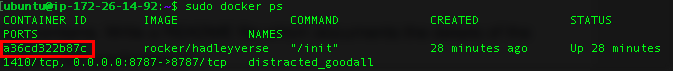
- To start bash shell for the container, run the following command replacing the
<container-id>with the string found above.
sudo docker exec -it <container-id> bash- Install libgtk2.0-dev, by running typing Y after the second command:
sudo apt-get update
sudo apt-get install wajig
sudo wajig install libgtk2.0-dev- You are now set to install rattle in R in RStudio
install.packages('rattle')5.2 Saving a Container
You do not need to close the Docker container, but it’s a good idea to save the container once you have it in a condition you like it.
To the save your current container, find the container id and run the commit command:
sudo docker ps
sudo docker commit -m "tidyverse + my packages" <container id> rstudio2To see all images
sudo docker images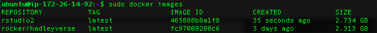
You should see rocker/hadleyverse and your new container. Now, kill your original container and start the new one. The command below actually kills all open containers.
sudo docker stop $(sudo docker ps -a -q)Then start your newly saved container:
sudo docker run -d -p 8787:8787 -e ROOT=TRUE rstudio26 Headless Dropbox
I found that this setup was not too useful unless I had data transferring to the Docker container running RStudio. A good solution here is Dropbox. All my work is stored in Dropbox and I have a Dropbox account that runs on an EC2 instance and automatically downloads university course files from Canvas, the learning management system at my university. So, if my professor adds a new .R file or dataset, I immediately have access in RStudio on Lightsail.
6.1 Install Python2.7
We need to install python2.7 because the python script that Dropbox created is for python2.7.
- Install a bunch of dependencies:
sudo apt-get update
sudo apt-get install build-essential checkinstall
sudo apt-get install libreadline-gplv2-dev libncursesw5-dev libssl-dev libsqlite3-dev tk-dev libgdbm-dev libc6-dev libbz2-dev- Download and extract python2.7
wget https://www.python.org/ftp/python/2.7.12/Python-2.7.12.tgz
tar -xvf Python-2.7.12.tgz
cd Python-2.7.12- Perform the installation. For the last line
checkinstall, you’ll need to respond to a lot of questions and it will take a bit.
./configure
make
sudo checkinstall- Check that the default python version is now 2.7
python -V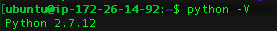
6.2 Install Dropbox
- Download and start the daemon
cd ~ && wget -O - "https://www.dropbox.com/download?plat=lnx.x86_64" | tar xzf -
~/.dropbox-dist/dropboxdAfter the last command you’ll see
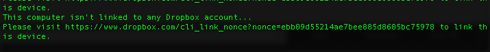
Take the URL and paste it into the browser to connect to your Dropbox account.
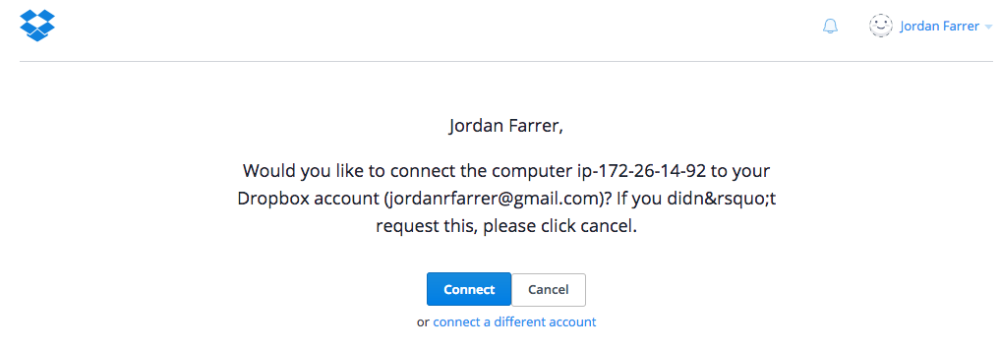
- Download Dropbox’s python script to control Dropbox:
mkdir -p ~/bin
wget -O ~/bin/dropbox.py "https://www.dropbox.com/download?dl=packages/dropbox.py"
chmod +x ~/bin/dropbox.py
python2.7 ~/bin/dropbox.py start
python2.7 ~/bin/dropbox.py autostart yYou’ll now see the Dropbox folder in your ubuntu directory.
6.3 Run Docker Container with Dropbox
Now with Dropbox set up, you can use the -v switch to attach the Dropbox folder (i.e. volume) to your Docker container.
sudo docker run -d -e ROOT=TRUE -v /home/ubuntu/Dropbox:/home/rstudio/Dropbox -p 8787:8787 rstudio2Now, you can see the Dropbox folder in the Files pane.
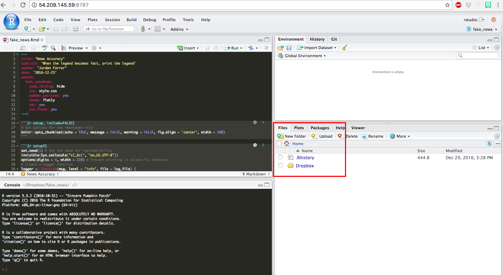